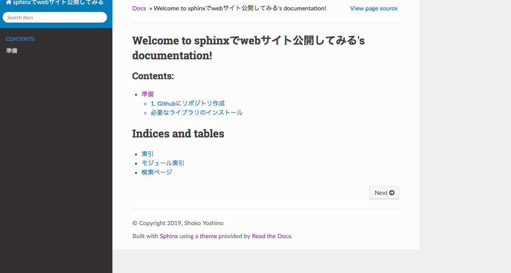
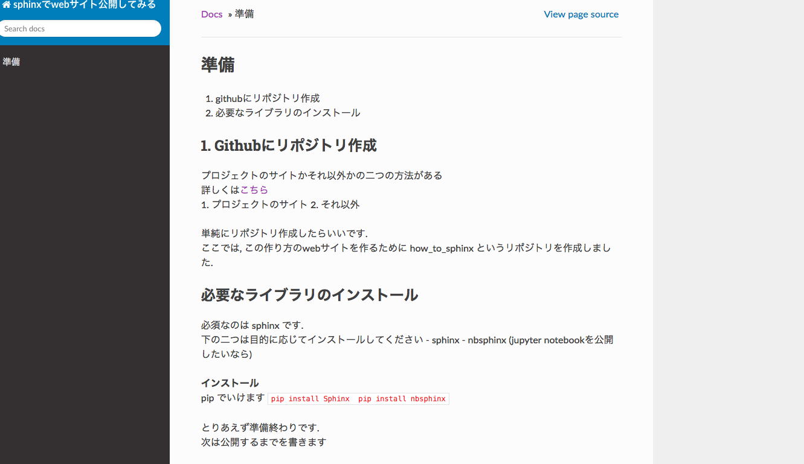

jupyter notebookを対応させる¶
ここでは，jupyter notebookの形式で表示できるようにします．
すること
- nbsphinx のインストール
- jupyter notebookの用意
- conf.pyの設定
- index.rstの設定
jupyter notebookの用意¶
見せるためのnotebook を用意します.
以上!!
conf.pyの設定¶
source ディレクトリ内にあるconf.py に以下の変更を加えます.
python extensions = [ 'nbsphinx' ]
extensionsというリストに
'nbsphinx' を加えてください.加えたら良いので, appendでもいいです.
以上!!
index¶
source ディレクトリ内にある index.rstの設定に以下の変更を加えます.
以上!!
できたらpageをみてみましょう.

Contentsの項目が増えました.!! 準備のリンクへ飛ぶと以下のようなnotebookを元としたpageに行きます.
